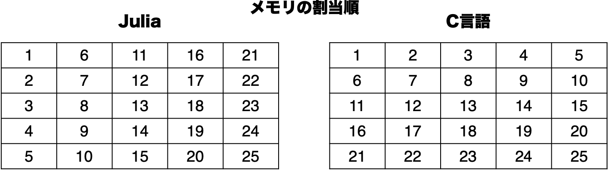

Juliaを使ってみよう
Juliaについて
Juliaはかなり新しい科学技術計算専用の言語です．結構欲張った言語です．例えばC言語は，一般に計算は速く自由度も高いのですが，科学技術計算の観点からは文法が冗長だったり，そもそも設計が近代的ではないので勉強も実装も（特に初学者にとっては）それなりに大変です．一方で，Matlabのような科学技術計算専用言語は，変数の型を指定する必要がないなど勉強も実装も簡単（プログラムの長さも短くなるし，多くの関数が初めから用意されているので簡単に利用できます）ですが，C言語と比べて計算がものすごく遅くなったりすることもあります（2倍とか3倍遅くなるのではなく，100倍，1000倍...遅くなることもあります）．
これらに対してJuliaは
- 科学技術計算に特化した文法でプログラミングが楽
- 科学技術計算に便利なコマンドやライブラリが豊富（ほとんど無料）
- Ｃ言語に匹敵する計算スピード（計算スピードの比較はこちら）
- 困ったときの公式ドキュメントも充実
という利点があります．ですので，これまでのC言語の学習があまりしっくりきていない人も心機一転頑張りましょう．一方で，C言語などに慣れている人にとっては，Julia（やMatlabやPython）の文法には違和感を覚えるかもしれません．とはいえ，型を指定するなどC言語に近い書き方をしてさらなる高速化を行うこともできたりしますので，勉強して損はない言語だと思います．
Juliaのインターフェース
Juliaには幾つかの使い方があります（降籏先生の解説も一読することをおすすめします）．
まず，ターミナルを立ち上げて julia と入力してエンターキーを押してJuliaを起動すると以下のような画面がでてきます．これを対話型セッション（REPL (read-eval-print loop)）といいます．今回の講義のページはREPLでJuliaを体験することを想定しています．
_
_ _ _(_)_ | Documentation: https://docs.julialang.org
(_) | (_) (_) |
_ _ _| |_ __ _ | Type "?" for help, "]?" for Pkg help.
| | | | | | |/ _` | |
| | |_| | | | (_| | | Version 1.9.4 (2023-11-14)
_/ |\__'_|_|_|\__'_| | Official https://julialang.org/ release
|__/ |
julia>
次に，（この講義ではほとんど扱うことはないと思いますが）Juliaのプログラムを書いたファイル hoge.jl （Juliaのプログラムの拡張子は jl です）を ターミナル から
$ julia hoge.jl
と実行する方法があります．
3つ目は，Jupyter Notebook を用いる方法です．次回以降の講義では Notebook を利用します． 他にも，直近ではPlutoというインターフェースもあり，こちらもJupyterHub上で利用できます． 興味のある学生は試してみるとよいでしょう．
文字列などの出力
文字列などを出力したいときには，print, println, @printf などを使います．
julia> print("ab") # 改行無し出力
ab
julia> print("ab\n") # \n は改行
ab
julia> println("ab") # 改行付き出力
ab
julia> a = [1,2,3]; # 配列 ← おそらく次回の講義で説明（ベクトルみたいなもの）．また，セミコロンは無くてもよい．
julia> println(a) # 配列も出力できる
[1, 2, 3]
julia> x = 5;
julia> println(x)
5
julia> typeof(x) # x の型を確認
Int64
julia> println("x")
x
julia> println("x = $x") # 文字列内で計算
x = 5
julia> println("x + 3 = $(x + 3)") # 文字列内で計算
x + 3 = 8
julia> println("a = $a") # 配列も同様に．
a = [1, 2, 3]
# C のprintfのようなマクロ
julia> using Printf # パッケージ読み込み（Cのincludeに相当）
julia> @printf("pi = %.8f\n", pi)
pi = 3.14159265
関数の使い方を詳しく知りたい時，公式のドキュメント で調べたり，Julia println のようなキーワードでweb検索するのも良いですが，より手軽な次のような方法があります．
julia>
この状態で ? を押すと
help?>
となります．
ここで，例えば，@printf と書いてエンターキーを押すと
help?> @printf
@printf([io::IOStream], "%Fmt", args...)
Print args using C printf style format specification string, with some
...
のように，その関数の使い方が表示されます．ただし，println のようにパッケージ無しで使える関数はいつでも調べることができますが，@printf のように，Printf というパッケージが必要なものの場合，using Printf をせずに（すなわち，パッケージを読み込まずに）? をすると，
help?> @printf
No documentation found.
Binding @printf does not exist.
のようになるので注意しましょう．
if文
公式ドキュメントの例でみてみましょう．考え方はC言語のときと同じですが，文法だけがやや異なります．
(x,y) = (2,3)
if x < y
println("x is less than y")
elseif x > y
println("x is greater than y")
else
println("x is equal to y")
end
これを実行すれば，
x is less than y
となります．x と y の値を変えて（大小関係や整数以外）試してみましょう．
for文とwhile文
まず，for文 の例をみてみましょう．
for i = 1:4
print("i = $i, ")
end
とすると出力は
i = 1, i = 2, i = 3, i = 4,
となります．
また，
for i in [1,4,0]
print("i = $i, ")
end
このような書き方をすれば出力は
i = 1, i = 4, i = 0,
となります．
次に while文 の例をみてみましょう．
i = 1;
while i < 5
println(i)
i += 1
end
これを実行すると出力は
1
2
3
4
となります．
関数
例えば，1 から n までの総和を計算する関数 sum は
function sum(n)
x = 0
for i = 1:n
x += i
end
return x
end
のように書きます．使うときは sum(10) のようにすればよいです．
C言語のときとは異なり，引数や戻り値の 型を指定していない ことに注意してください．実は，型を指定することもできる のですが（その方が好ましいこともあります），このように，型を意識せずにプログラムを書けることが，Juliaの手軽さの一つといえます．型の指定の仕方については，Juliaに慣れてきた頃に説明します．
注意
C言語 等に慣れている人にとっては，型を指定しないことはとても気持ち悪く感じるかもしれませんが，これも言語の一つの特性だと思うとよいでしょう．なお，私が研究で Julia を使うときは，まずは，型をあまり意識せずにプログラム書き，だいたいできた段階で，計算時間やメモリ使用量といったパフォーマンスをチェックしながら，必要な箇所で型を指定したりしています．数学関数
標準的な数学関数を利用するために，何らかのパッケージを読み込む必要はありません．
# 例
julia> exp(1)
2.718281828459045
julia> sin(pi/2)
1.0
ただし，線形代数の演算（例えば内積）などは，例えば LinearAlgebra といったパッケージを必要とします．これについては，必要になった時点で解説します．
再帰関数
Jilia でも再帰関数を定義できます．階乗の計算を行う fact 関数を再帰的に定義する場合，
function fact(n)
if n == 0
return 1
else
return n * fact(n-1)
end
end
のように書きます．なお，julia にはデフォルトで factorial という関数が準備されています．この関数の定義の仕方が知りたいときは，公式のドキュメント の factorial の欄の右下にある source をクリックすることで確認できます．どうやら
function factorial(n::Integer)
n < 0 && throw(DomainError(n, "`n` must be nonnegative."))
f::typeof(n*n) = 1
for i::typeof(n*n) = 2:n
f *= i
end
return f
end
のように定義されているようです．for文 を使って定義されていますね．このように，組み込み関数（デフォルトで準備されている関数）の定義をみると勉強になることも多いです（プロが書いたものなので当然です）．この factorial の例でも，例えば引数の型を整数型としたいときは n::Integer とすればよいことが分かります．
実は，上記の fact 関数 の定義は一行で
fact1(n) = n == 0 ? 1 : n * fact1(n - 1)
と書くことができます．fact1(n) = ... の ... の部分が関数の定義になっていることはイメージしやすいと思います．一方で，初見だと ... の部分が意味不明ではないでしょうか？ 実は，a ? b : c というのは，
if a
b
else
c
end
という意味です．実際に調べてみると，以下のように説明されています．
help?> ?
search: ? ?:
a ? b : c
Short form for conditionals; read "if a, evaluate b otherwise evaluate c".
配列
ベクトルや行列（さらにはテンソル）を扱うときには配列を利用します．縦ベクトルが一次元配列，行列が二次元配列に対応します．今の段階であまり気にする必要はありませんが，配列の要素は全て同じ型になります．
例を見てみましょう．
julia> x = [1,2,3]
3-element Array{Int64,1}:
1
2
3
このように，[ ] で囲んで，カンマで区切れば，一次元配列（= 縦ベクトル）になります．
julia> x = [1;2;3]
3-element Array{Int64,1}:
1
2
3
このようにセミコロンで区切っても同じ結果になります．
二次元配列（= 行列）は次のようにすればよいです．
julia> A = [1 2 3;
4 5 6;
7 8 9]
3×3 Array{Int64,2}:
1 2 3
4 5 6
7 8 9
ここで，配列の要素は整数型です．なお，一つでも実数型にすると，例えば次のようになります．
julia> A = [1.0 2 3;
4 5 6;
7 8 9]
3×3 Array{Float64,2}:
1.0 2.0 3.0
4.0 5.0 6.0
7.0 8.0 9.0
行列のベクトルの掛け算には次のように * を使います．
julia> A * x
3-element Array{Int64,1}:
14
32
50
以下，幾つか重要な例を見てみましょう．
# 全ての値が0の配列
julia> zeros(2) # デフォルトはFloat64型
2-element Array{Float64,1}:
0.0
0.0
julia> zeros(Int64,2) # 型を指定したければこのように．
2-element Array{Int64,1}:
0
0
julia> zeros(Int64,2, 3) # 零行列
2×3 Array{Int64,2}:
0 0 0
0 0 0
# 全ての値が1の配列
julia> ones(2)
2-element Array{Float64,1}:
1.0
1.0
julia> ones(Int64,2)
2-element Array{Int64,1}:
1
1
julia> ones(Int64,2,3)
2×3 Array{Int64,2}:
1 1 1
1 1 1
# 一様分布でランダムに初期化した配列
julia> rand(2,3)
2×3 Array{Float64,2}:
0.146656 0.330993 0.462748
0.404141 0.318241 0.367632
# 正規分布でランダムに初期化した配列
julia> randn(2,3)
2×3 Array{Float64,2}:
2.35716 1.44751 0.813044
1.49665 -0.677559 0.467396
配列の要素は，A[i,j] のように取り出します．代入も同様です．
julia> A = rand(2,3)
2×3 Array{Float64,2}:
0.718872 0.349552 0.10818
0.13624 0.0399332 0.241702
# 要素の取り出し
julia> A[1,2]
0.34955168533252645
# 要素の代入
julia> A[1,2] = 1.0;
julia> A
2×3 Array{Float64,2}:
0.718872 1.0 0.10818
0.13624 0.0399332 0.241702
Juliaでは，配列のインデックスは 1 からはじまります．C言語など，他の幾つかの言語では，配列のインデックスは 0 からはじまるので，そのような言語に慣れている方にとっては，少し違和感を覚えるかもしれませんが，「Juliaではそういうルールなのだ」と思えば良いでしょう．
行列-ベクトル積
行列とベクトルの掛け算は，A * x のように簡単に書けるわけですが，もう少し注意深く考えてみましょう．\(A\in\mathbb{R}^{m\times n}\) と ベクトル \(x\in\mathbb{R}^{n}\) に対して，それらの積 \(Ax\) の第 \(i\) 成分は，
$$ \sum_{j=1}^n a_{ij} x_j$$
ですから，\(y = Ax\) を計算したければ，
julia> A = randn(3,2)
3×2 Array{Float64,2}:
-0.0770241 -0.0941118
2.37894 0.198019
0.681646 1.17241
julia> x = randn(2)
2-element Array{Float64,1}:
-0.3890395113596626
-1.0779098168822268
julia> y = zeros(3);
julia> for i = 1:3
for j = 1:2
y[i] = y[i] + A[i,j] * x[j]
end
end
とすればよさそうです．このとき，結果は
julia> y
3-element Array{Float64,1}:
0.1314095002691501
-1.1389493877360208
-1.5289372130207397
となり，A * x の結果
julia> A * x
3-element Array{Float64,1}:
0.1314095002691501
-1.1389493877360208
-1.5289372130207397
と確かに一致します．もっとも，二重になっている for文 の順番を入れ替えて
julia> z = zeros(3)
3-element Array{Float64,1}:
0.0
0.0
0.0
julia> for j = 1:2
for i = 1:3
z[i] = z[i] + A[i,j] * x[j]
end
end
としても，やはり結果は
julia> z
3-element Array{Float64,1}:
0.1314095002691501
-1.1389493877360208
-1.5289372130207397
となります．「数学的には同じなのだから当たり前ではないか！」と思われるかもしれませんが，実はちょっとした違いがあります．
簡単のために \(A\) は正方行列として，そのサイズを \(n=10000\) としましょう．行列 \(A\) とベクトル \(x\) を次のように初期化しておきます．
julia> n = 10000;
julia> A = randn(n,n);
julia> x = ones(n);
そして，行列ベクトル積を計算する関数を2つ準備しましょう．
julia> function matvec1(A,x)
n = length(x)
y = zeros(n)
for i = 1:n
for j = 1:n
y[i] += A[i,j] * x[j]
end
end
return y
end
matvec1 (generic function with 1 method)
julia> function matvec2(A,x)
n = length(x)
y = zeros(n)
for j = 1:n
for i = 1:n
y[i] += A[i,j] * x[j]
end
end
return y
end
matvec2 (generic function with 1 method)
違いは，for文 の順番だけです．これらの関数を使って，行列ベクトル積を計算するときの実行時間を測ってみましょう．そのためには，@time というコマンドを使います．以下の結果は，実行する環境によって異なりますが，私のラップトップでは次のようになりました．（実行する度に計算時間は異なるはずですが，「1回目」は極端に遅い可能性があるので，2回目以降（何回やってもだいたい同じ）で比較してみるとよいでしょう）
julia> @time matvec1(A,x);
0.773708 seconds (2 allocations: 78.203 KiB)
julia> @time matvec2(A,x);
0.105140 seconds (2 allocations: 78.203 KiB)
外側に j のループがある matvec2 の方が圧倒的に速いですね．なお，* を使えば
julia> @time A * x;
0.019867 seconds (2 allocations: 78.203 KiB)
のようにより高速です．matvec1 と matvec2 の違いは，配列の要素の格納の違いからきています．例えば，JuliaとC言語では \(5\times 5\) の配列の要素はそれぞれ次の順で格納されています．

matvec1 では，1, 6, 11, 16, 21, ... の順で飛び飛びにアクセスしているため，計算の時間も長くかかってしまっています．それに対して，matvec2 では，1, 2, 3, 4, 5, 6, ... という素直な順でアクセスしているため相対的に高速に計算ができているのです（同様な理由で，C言語の場合は，matvec1 のような書き方の方が高速に計算できます）．
Notebookの利用
Notebookを利用する場合，ファイルの拡張子は .ipyng を使用します．
サンプルファイルを用意してみました．Raw から，名前を付けて保存をクリックすれば Sample.ipynb というファイルをダウンロードできるはずです．ダウンロードできたら JupyterHub の juliaフォルダ などにコピーし，実行してみましょう．
注意
このプログラムでは，Plots というパッケージを利用しています．これからの講義でもいくつかの代表的なパッケージを利用することがあります．講義の枠を超えていろいろ試してみることは推奨しますが，デフォルトで準備されていないパッケージは決して追加しないでください． 具体的には，デフォルトで準備されていないパッケージを利用しようとするとPackage ProbNumDiffEq not found, but a package named ProbNumDiffEq is available from
│ a registry.
│ Install package?
│ (@v1.9) pkg> add ProbNumDiffEq
└ (y/n/o) [y]:
Jupyter のインストール
各自のPCのローカル環境にJupyterをインストールして使うこともできます． コンピュータやプログラミングに詳しい学生は，Jupyter のweb ページ などを参考に JupyterLab をインストールするのもよい経験となるでしょう．